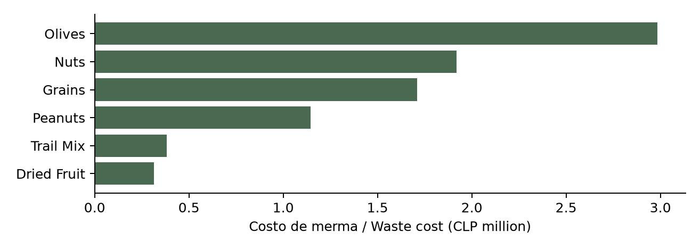

Control de merma y reposición por lotes
CLP 2,984,432
Merma al costo en aceitunas
3,825 lotes
128 productos · 22 proveedores
25.03% / 2.90%
Margen bruto / Tasa de merma
Priorizar un piloto de control de merma en aceitunas antes de aprobar inversión en equipos de frío o automatizar pedidos. La categoría concentra CLP 2.984.432 de pérdida valorizada al costo.
Se conciliaron 3.825 lotes en pesos chilenos para evitar sumar unidades físicas distintas (kilos, frascos y paquetes), separando los lotes cerrados al corte de junio de 2025 de las cohortes posteriores.
SQL · Python · Excel + Tabla Dinámica · Power BI

Priorización monetaria de merma al costo por categoría
Power BI · Excel